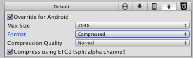

Android 2D Textures Overrides
This page details the Texture Overrides specific to Android. A description of the general Texture Overrides can be found here.
The information contained on this page assumes the reader has working knowledge of DXT and ETC Texture compression, OpenGL ES and Android development.
Further information about Texture compression and OpenGL ES can be found on the following Wikipedia pages:

| Texture Format | Internal representation |
|---|---|
| RGB Compressed DXT1 | Compressed RGB texture. Supported by NVIDIA Tegra. 4 bits per pixel (32 KB for a 256x256 texture). |
| RGB Crunched DXT1 | Compressed RGB Texture. Supported by NVIDIA Tegra. Crunch is a lossy compression format on top of DXT Texture compression. Textures are decompressed to DXT1 by the CPU and then uploaded to the GPU at runtime. Crunch produces smaller Textures than by regular DXT1 compression, but with lower quality. Crunch Textures can take a long time to compress, but decompression at runtime is very fast. 4 bits per pixel (output size varies depending on the Texture - from 1 KB for a 256x256 Texture). |
| RGBA Compressed DXT5 | Compressed RGBA texture. Supported by NVIDIA Tegra. 8 bits per pixel (64 KB for a 256x256 texture). |
| RGBA Crunched DXT5 | Compressed RGBA Texture. Supported by NVIDIA Tegra. Crunch is a lossy compression format on top of DXT Texture compression. Textures are decompressed to DXT5 on the CPU and then uploaded to the GPU at runtime. Crunch compression can be used to produce significantly smaller Textures than by regular DXT5 compression, but with lower quality. Crunch Textures can take a long time to compress, but decompression at runtime is very fast. 8 bits per pixel (output size varies depending on the Texture - from 1 KB for a 256x256 Texture). |
| RGB Compressed ETC 4 bits | Compressed RGB Texture. This is the default Texture format for Android projects in Unity. ETC_RGB4 is a part of OpenGL ES 2.0 and is supported by all OpenGL ES 2.0 GPUs. It does not support alpha. 4 bits per pixel (32 KB for a 256x256 Texture). |
| RGB Crunched ETC | Compressed RGB Texture. Crunch is a lossy compression format on top of ETC Texture compression. Textures are decompressed to ETC_RGB4 by the CPU and then uploaded to the GPU at runtime. Crunch produces smaller Textures than by regular ETC_RGB4 compression, but with lower quality. Crunch Textures can take a long time to compress, but decompression at runtime is very fast. ETC_RGB4 is a part of OpenGL ES 2.0 and is supported by all OpenGL ES 2.0 GPUs. It does not support alpha. 4 bits per pixel (output size varies depending on the Texture - from 1 KB for a 256x256 Texture). |
| RGB Compressed ETC2 4 bits | Compressed RGB Texture. ETC2 is a part of OpenGL ES 3.0 and is supported by all OpenGL ES 3.0 GPUs. 4 bits per pixel (32 KB for a 256x256 Texture). |
| RGB + 1-bit Alpha Compressed ETC2 4 bits | Compressed RGB Texture with 1-bit punchthrough alpha. ETC2 is a part of OpenGL ES 3.0 and is supported by all OpenGL ES 3.0 GPUs. 4 bits per pixel (32 KB for a 256x256 Texture). |
| RGBA Compressed ETC2 8 bits | Compressed RGBA Texture. Supported by all OpenGL ES 3.0 GPUs. (64 KB for a 256x256 Texture) |
| RGBA Crunched ETC2 | Compressed RGBA Texture. Crunch is a lossy compression format on top of ETC Texture compression. Textures are decompressed to ETC2_RGBA8 on the CPU and then uploaded to the GPU at runtime. Crunch compression can be used to produce significantly smaller Textures than by regular ETC2_RGBA8 compression, but with lower quality. Crunch Textures can take a long time to compress, but decompression at runtime is very fast. Supported by all OpenGL ES 3.0 GPUs. 8 bits per pixel (output size varies depending on the Texture - from 1 KB for a 256x256 Texture). |
| RGB Compressed PVRTC 2 bits | Compressed RGB Texture. Supported by Imagination PowerVR GPUs. 2 bits per pixel (16 KB for a 256x256 Texture) |
| RGBA Compressed PVRTC 2 bits | Compressed RGBA Texture. Supported by Imagination PowerVR GPUs. 2 bits per pixel (16 KB for a 256x256 Texture) |
| RGB Compressed PVRTC 4 bits | Compressed RGB Texture. Supported by Imagination PowerVR GPUs. 4 bits per pixel (32 KB for a 256x256 Texture) |
| RGBA Compressed PVRTC 4 bits | Compressed RGBA Texture. Supported by Imagination PowerVR GPUs. 4 bits per pixel (32 KB for a 256x256 Texture) |
| RGB Compressed ATC 4 bits | Compressed RGB Texture. Supported by Qualcomm Snapdragon. 4 bits per pixel (32 KB for a 256x256 Texture). |
| RGBA Compressed ATC 8 bits | Compressed RGBA Texture. Supported by Qualcomm Snapdragon. 8 bits per pixel (64 KB for a 256x256 Texture). |
| RGB Compressed ASTC 4x4 block RGB Compressed ASTC 5x5 block RGB Compressed ASTC 6x6 block RGB Compressed ASTC 8x8 block RGB Compressed ASTC 10x10 block RGB Compressed ASTC 12x12 block |
Compressed RGB Texture. Supported by all OpenGL ES 3.2 and OpenGL ES 3.1+AEP GPUs, as well as by some OpenGL ES 3.0 GPUs. This compression type uses fixed 128-bit block size, and depending on the pixel block size (4x4 to 12x12), it may utilize 8 to 0.89 bits per pixel. The size of the compressed Texture varies from 64 KB for a 256x256 Texture (4x4 block, highest quality) to 7.6 KB for a 256x256 Texture (12x12 block, highest compression rate). |
| RGBA Compressed ASTC 4x4 block RGBA Compressed ASTC 5x5 block RGBA Compressed ASTC 6x6 block RGBA Compressed ASTC 8x8 block RGBA Compressed ASTC 10x10 block RGBA Compressed ASTC 12x12 block |
Compressed RGBA Texture. Supported by all OpenGL ES 3.2 and OpenGL ES 3.1+AEP GPUs, as well as by some OpenGL ES 3.0 GPUs. This compression type uses fixed 128-bit block size, and depending on the pixel block size (4x4 to 12x12), it may utilize 8 to 0.89 bits per pixel. The size of the compressed Texture varies from 64 KB for a 256x256 Texture (4x4 block, highest quality) to 7.6 KB for a 256x256 Texture (12x12 block, highest compression rate). |
| RGB 16 bit | 65 thousand colors with no alpha. Uses more memory than the compressed formats, but could be more suitable for UI or crisp Textures without gradients. 128 KB for a 256x256 Texture. |
| RGB 24 bit | Truecolor but without alpha. 192 KB for a 256x256 Texture. |
| Alpha 8 bit | High quality alpha channel but without any color. 64 KB for a 256x256 Texture. |
| RGBA 16 bit | Low-quality truecolor. The default compression for the Textures with alpha channel. 128 KB for a 256x256 Texture. |
| RGBA 32 bit | Truecolor with alpha - this is the highest quality compression for the Textures with alpha. 256 KB for a 256x256 Texture. |
| Compression quality | Choose Fast for quickest performance, Best for the best image quality and Normal for a balance between the two. |
If a your app is installed on a device that does not support the Texture compression format you have used, Unity will decompress the Textures to RGBA 32 and store them in the device’s memory—along with the compressed Textures—when the app is running. This will lead to increased loading times and higher memory usage as Unity must decompress the Textures and store two versions of the Textures used (compressed and uncompressed).This can also have a large impact on rendering performance, especially on older, slower devices.
Use ETC2 compression unless you are targeting specific hardware (like Nvidia Tegra). ETC2 supports Textures with and without an alpha channel and is supported by all OpenGL ES 3 devices. To avoid software decompression, set the minimum graphics API to OpenGL ES 3 in the Android Player settings by removing OpenGL ES 2 from the Graphics APIs list and setting the Minimum API Level to 18+.

To target OpenGL ES 2 and OpenGL ES 3 devices, you can create two different APKs by first building an APK targeting OpenGL ES 3, as shown above, and then building an APK targeting OpenGL ES 2 by removing OpenGL ES 2 and Vulcan from the Graphics APIs section of the Player settings. You can then publish both of these APKs to the Google Play Store. When a user downloads your app, the Google Play Store will automatically install the most relevant APK for their device. For more information about publishing multiple APK files, see Android Developer documentation on Publishing Multiple APKs and Google Play Store APK filtering.
When building an APK that targets OpenGL ES 2, you can use ETC1 texture compression.
The Texture compression format for OpenGL ES2-targeted APK can be ETC1. Unity can use ETC1 for Textures with Alpha, provided they are placed on an Atlas (by specifying the packing tag) and the build is for Android. You can opt in for this by setting the Compress using ETC1 checkbox for the Texture. Under the hood Unity splits the resulting atlas into two Textures, each without alpha and then combine them in the final parts of the render-pipeline.
If you absolutely want to store an alpha channel in a Texture, RGBA16 bit is the compression format supported by all hardware vendors.